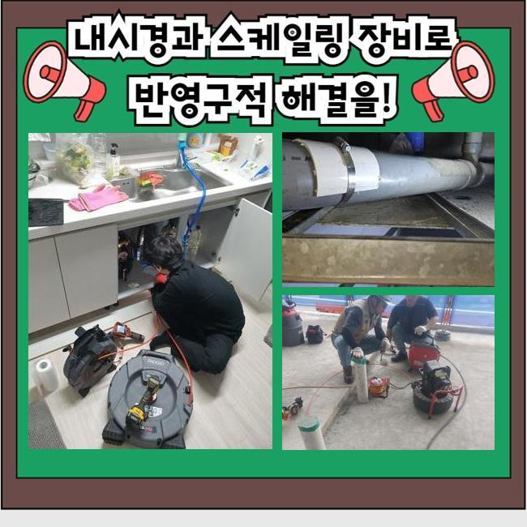
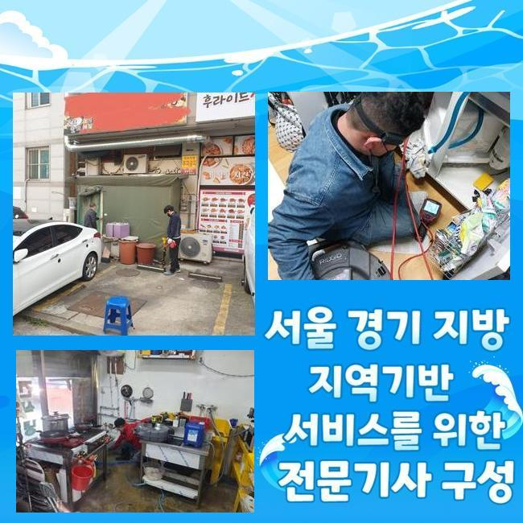
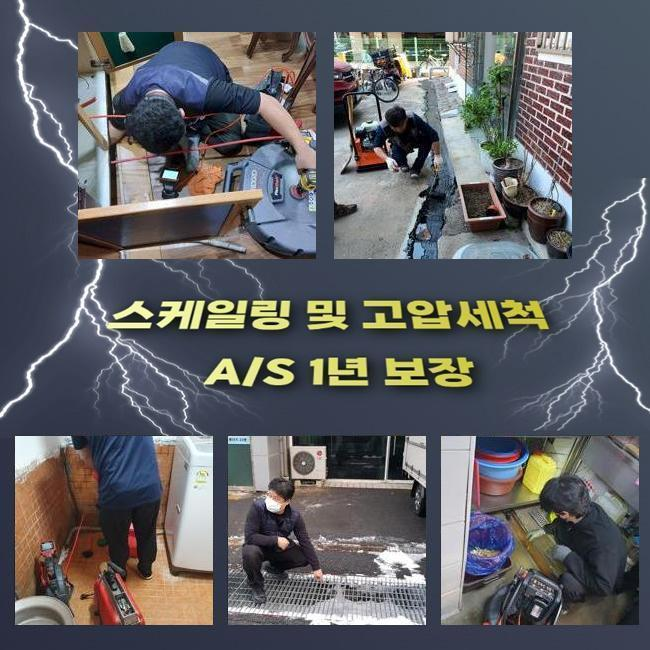
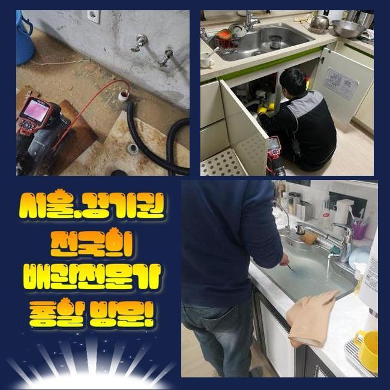
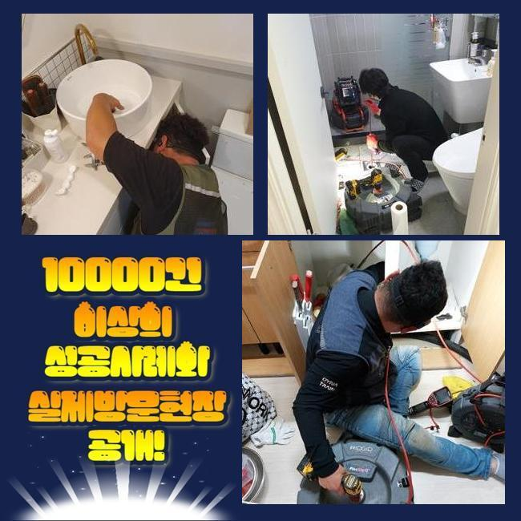
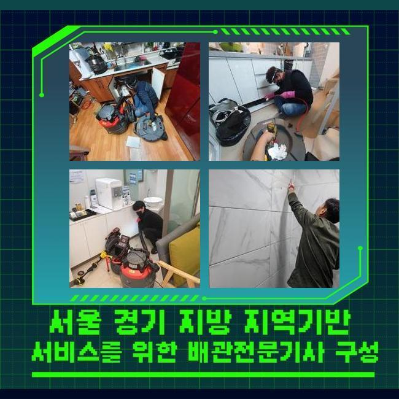
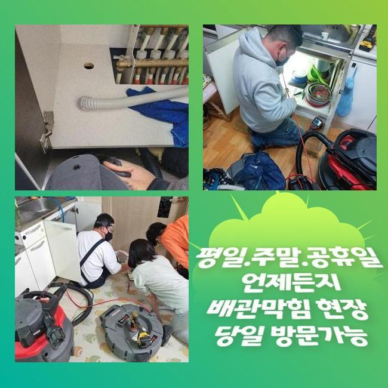

🏠 은평구 녹번동화장실역류 진관동 배수구뚫기 설비출장
용인 배관막힘 전문 시공 후기

📋 작업 개요
- 위치: 용인
- 서비스 유형: 배관막힘, 맨홀막힘, 역류해결, 뚫는업체, 배관청소, 고압세척, 배관보수
- 작업 일시: 2024. 11. 15. 3:06
- 업체명: 하수구수사대 (010-5615-2118)
🔍 문제 상황
은평구 녹번동화장실역류 진관동 배수구뚫기 설비출장
우리들이 이용을 하고있는 공간마다 하수설비가 있기 마련이죠
자주 사용하는만큼 이용자의 바른 사용과 주기적인 청소가 중요해요
생활하면서 이용한 하수가 배출되는 것인데 청소를 잘 해주시면서 이용하고 계신다면 특별히 문제가 발생하지는 않습니다
올바르지 않은 이용으로 이물질들이 유입되고 있다면 수많은 문제사항들이 생기곤 해요
의뢰자께서 천장 배수관의 막힘사고로 수리를 맡기셔서 점검을 진행하고자 긴급출동했어요
어떠한 원인때문에 문제점이 발생한건지 의심이 되는 부위의 점검들을 진행합니다
첫번째로는 시공에 들어가면 배수관의 끝부분을 제일먼저 파악하면서 하수가 내려오는 지점들을 확정해두고 그다음 구간들도 점검을 시작해요
종합적으로 체크해보니 아랫층 상가쪽의 하수라인이 막혀서 역류하는 상황이였습니다
사례자님께 왜 이러한 상황이 일어난건지 말씀드리니 급히 수리하기를 원하셨기 때문에 지체없이 진행에 들어갔어요
설비가 위치해 있는 지하로 이동하면서 문제가 발생한 부분을 관탐색 장치로 찾아냅니다
이후에 작업 예상부위 지점에 있는 차량과 행인들을 이동시키고 나서 작업을 시작할 수 있었습니다

🔎 원인 분석
💡 전문가 진단: 정밀 진단 장비를 사용하여 슬러지의 고착 여부를 판명하고 타격/세척 작업을 실시했습니다.
이러한 막힘문제는 배관의 손상으로 연쇄되는 성향이 있어서 해결이 쉽지않은 주정차 지역에서 자동차가 피해를 입는 일도 많아서 매우 조심하셔야 해요
배수라인에 대하여 알고는 계시겠지만 배수관은 계속적으로 사용할 수 없어요
신경을 쓴다고 쓰면서 관리 하지만서도 시간적인 노후화가 원인이 되면서 문제들이 일어나기 시작합니다
배수구는 깨끗히 물만이 흐르는게 아니고 이물질이 유입되는 이유로 사용을 많이 하면 할수록 배수관의 내부는 엉망진창이 되어갑니다
사용환경에 따라서 권장되는 기간도 다 안됐는데 단시간만에 망가지는 경우도 있어요
처음 순서로 작업을 시작해야 하므로 문제점이 시작된 배수관에 타공을 합니다
경험적으로 천정에 설치된 배관은 매립되어 있는 배수구와 또다른 작업방식으로 배수관에 타공을 한 이후에 고압으로 세척이 가능한 노즐들을 넣어서 내부 노폐물을 배출시킵니다
동일한 과정을 진행하여 천정속의 하수라인 막힘사태도 설명드렸던 과정으로 수리하기 위하여 작게 타공하여 작업했어요
수많은 자동차가 이용하는 현장이라서 사전작업을 통한 큰비닐을 깔아두고 주변을 완벽하게 보호하면서 오염물질이 피해를 주지않도록 주의하고 있습니다
수리를 시작하기 전에 80도정도의 온수를 이용해서 하수관 내부에 있던 단단한 이물질을 배출시킵니다
배수구가 막히는 상황이 발생했을때 따뜻한 온수로 세척작업을 진행하는 것은 필수입니다
따뜻한 온도의 물로 음식기름등을 풀어내면서 강한 압으로 막혀있던 오염물질을 출구쪽으로 이동시켜 제거해냅니다

🔧 작업 과정
같은 문제상황으로 상세하게 문의를 하고싶으시다면 지금 겪고 계시는 불편을 말씀 해주시기 바랍니다
수리를 위한 상담으로 친절히 응대하고 완벽하게 해결하겠습니다
문제부위를 뚫고나니 어마어마한 오염물질이 흘러나왔어요
이같은 작업을 마지막으로 종료 되는거면 간단한 작업이였지만 이어진 하수관도 검사해보고 혹시라도 발견되는 노폐물은 완벽하게 청소하고 마무리합니다
시간이 지남에 따라 불순물이 내부벽에 붙으므로 사용시 주의하여 하수 외에는 내려가지 않게끔 주의 하시는게 좋아요
그렇게 하는 습관들이 역류사태를 미연에 막고 사용시에 깔끔한 청소와 올바른 사용법으로 관련된 문제들이 발생하지 않겠죠?
지상의 맨홀에서 배출작업이 수월한지 체크하였습니다
이쪽 배관은 샤프트기를 활용해 기름기를 제거해냈습니다
윗쪽에서 아랫방향으로 계속적으로 걸러내니 음식업을 하는 종합가게들에서 배출된 노폐물과 기름기가 제거되면서 순환되는걸 확인했습니다
배수구에 이것저것 다 버린다고 쉽게 배출되는 것이 아니예요
상가밀집 지역이라면 많은 사람들이 하루동안에도 몇번씩 이동하므로 신경써서 관리를 한다해도 주택가보다는 더 잦은 수리가 필요합니다
이러한 이유로 종합상가는 자주 점검을 받으며 건강하게 사용하는 것이 중요합니다
굳어있는 오염물질을 빼낸후 청소까지 끝내고 연결된 하수라인을 확인하고 마무리합니다
막힌 곳 없이 정상적인지 확인하니 맑고 깨끗한 물들이 직접 보여집니다
타공했던 배수관에도 마지막으로 보수작업들을 했습니다
가게마다 수도사용을 일일이 확인하고 특별한 이상은 없는가 체크했지만 문제없었습니다
확인겸 일시적으로 물을 한번에 내려보낼 수 있게끔 부은후에 테스트 해보시라고 전달드렸는데 문제없다고 하시네요
모든게 완벽하게 마무리 됐어요
마무리를 하면서 주변을 봤더니 혹시나 피해가 이어지는건 아닌지 걱정하고 계시는 분이 많이 보였습니다


✅ 작업 완료
최종 보수작업까지 책임을 다하니 크게 걱정 마시고 맡겨주세요
점점 문제들이 퍼지므로 물을 이용을 하고있는데 불편이 느껴지신다면 곧신속하게 문의 해주세요
이번처럼 천장의 배수관 말썽이 발생하면 전문진이 출동하여 정밀하게 파악하여 신속 정확하게 처리할 수 있습니다
수많은 경험이 있는 전문업체에 맡기셔서 수리하시기 바랍니다
어떤 상황이라도 의뢰 해주시면 지금 당장 전문가가 방문하여 고쳐드리겠습니다




⚠️ 하수구 배관 막힘 예방 및 관리 가이드
- ✅ 머리카락, 비닐, 물티슈 등 물에 분해되지 않는 이물질은 하수구 유입을 절대 금지해 주세요.
- ✅ 하수구 거름망을 씌우고 모여진 이물질은 주기적으로 쓰레기통에 바로 비워주셔야 합니다.
- ✅ 배관 노후가 심할 경우 이물질이 더 쉽게 걸리므로 주기적인 배관 세척(고압세척 등)을 권장합니다.
- ✅ 작업 후 1년 이내 재발 시 하수구수사대에서 무상 A/S 보증 서비스를 제공합니다.
💡 핵심 정리
- 확실한 장비 작업(내시경 점검 및 샤프트 스케일링)으로 원인을 뿌리 뽑습니다.
- 작업 후 1년 이내에 동일한 부위 재발 시 100% 무상 A/S 서비스를 보장합니다.
- 서울 · 경기 · 인천 전 지역에 24시간 언제든 긴급 출동할 수 있도록 항시 대기 중입니다.
❓ 자주 묻는 질문 (FAQ)
🚨 용인 배관막힘 문제로 고민이신가요?
정확한 원인 진단과 확실한 시공으로 재발 없는 해결을 약속드립니다.
24시간 긴급 출동 | 서울 · 경기 · 인천 전지역 | 1년 내 재발 시 무상 A/S